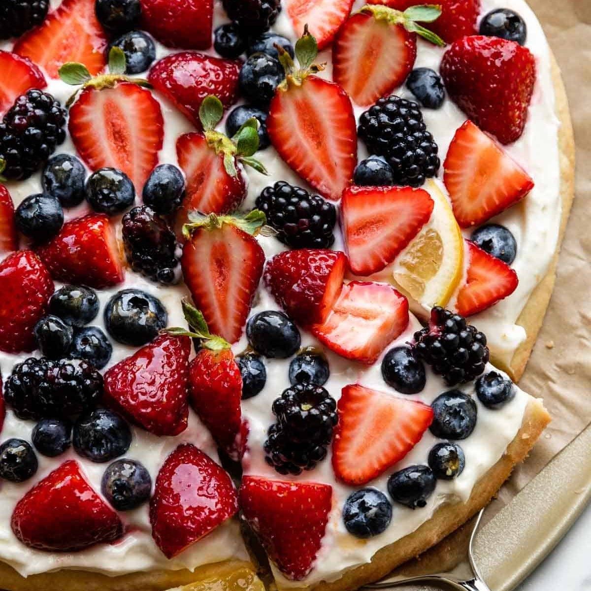

| Ingredients | Measurement |
|---|---|
| lemon cookie mix | 1 box (13 oz) |
| butter | 1/2 cups |
| egg | 1 |
| cream cheese | 8 oz |
| powdered sugar | 1/2 cups |
| lemon curd | 1/4 cup |
| vanilla extract | 1/2 tsp |
| mixed berries | 2 cups |
Preheat your oven to 350°F. Mix cookie mix, butter, and egg in large bowl. Press the dough evenly into greased 12-inch pan. Bake for 12-15 minutes, then allow to cool.
In a medium bowl, beat the cream cheese, powdered sugar, vanilla extract, and lemon curd together.
Spread the lemon cream mixture evenly over the cookie crust. Wash and thoroughly dry your berries. Arrange berries creatively over the cream layer.
Refrigerate assembled pizza 60 minutes before slicing.